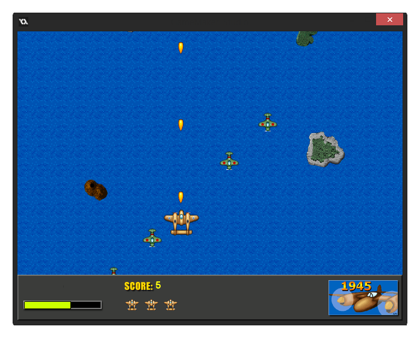

Tutorial
Page 1 of 9
Scrolling Shooter - Part 1
Scrolling shooters are a very popular type of arcade action game, and are also rather easy to create with a package like GameMaker. Therefore this makes them the ideal candidate for a tutorial, and in
this one we will make such a game and, in the process, you will learn a number of aspects of GameMaker: Studio, in particular the use of variables.
In a scrolling shooter the player controls an object, for example a plane, spaceship, or a car, which moves over a scrolling background. Obstacles appear on the background that must be avoided and enemies
appear that must be shot. Often bonus objects appear that can be picked up for addition benefits too. During the game the number, variety, and strength of the enemies increases making it harder and harder
to survive.
In this tutorial we will create a scrolling shooter called 1945, in which the player flies in a plane over a sea and enemy planes try to destroy the player. We will treat aspects like how to create the
illusion of motion using a scrolling background, how to control the plane, how to make enemies and bullets, and how to deal with the score, with lives and with the damage of the plane. But first of all we
will delve into a very important aspect of GameMaker: Studio that extends the possibilities considerably: the use of variables.

At various points in this tutorial you will be directed towards the "Scrolling Shooter Assets" folder. It can be found in this folder and
you should have it open and ready as we will need a few things from it for our game.
NOTE: If you can't see some of the images in this tutorial correctly, or they seem too small, you can expand the tutorial pane by dragging the left window border into the IDE.
© Copyright YoYo Games Ltd. 2015 All Rights Reserved